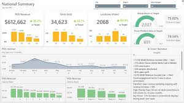
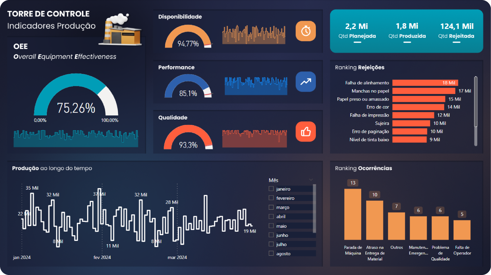
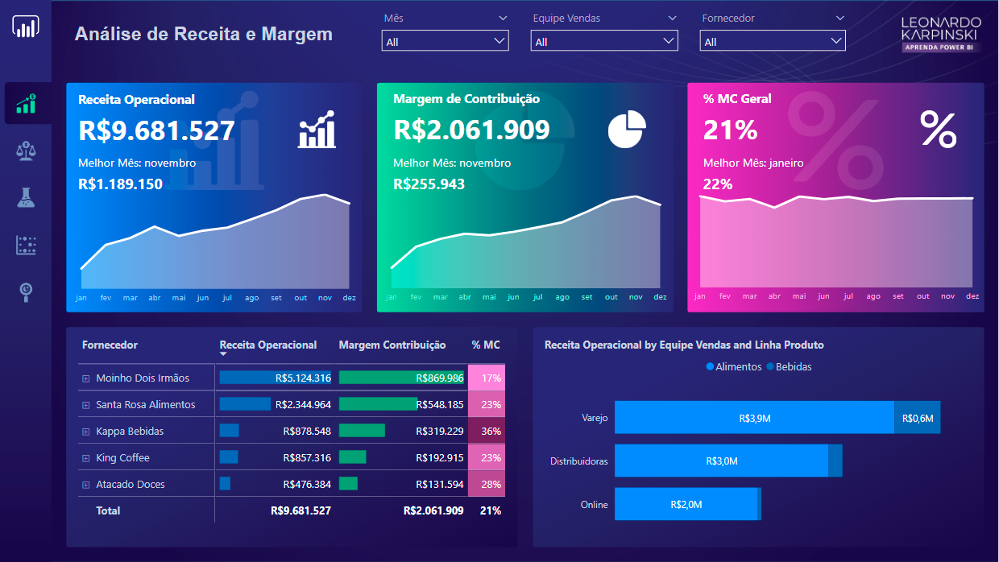
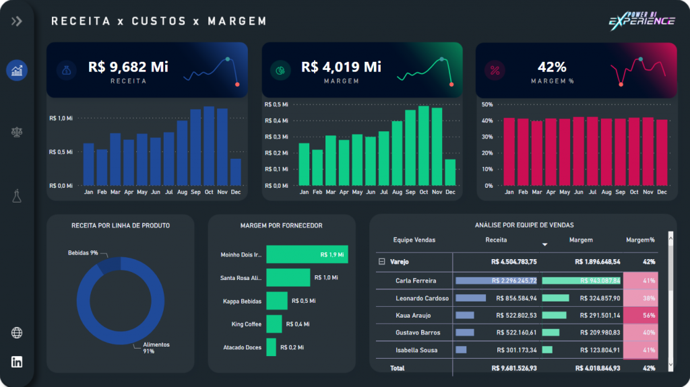

Data Science & Analytics
Transformando Dados em Visão Estratégica.
Descubra insights ocultos e impulsione suas decisões de negócios com a Spacelook Tech.
Sobre Mim
Sou um Cientista/Analista de Dados apaixonado por extrair valor da informação.
Com foco em negócios, a Spacelook Tech nasceu da vontade de explorar dados como se fossem a vastidão do espaço: buscando sempre descobrir algo novo e impactante. Atuo em todo o ciclo de vida dos dados, desde a coleta e estruturação até a visualização e modelagem preditiva.
Formação Acadêmica
Graduação em Ciência de Dados / Estatística
Universidade XYZ • 2020 - 2024Formação sólida em estatística, matemática aplicada e programação voltada para análise e modelagem de dados.
Certificação Avançada em Analytics
Instituição ABC • 2023Especialização na criação de dashboards dinâmicos e pipelines de dados eficientes.
Experiência Profissional
Analista de Dados Pleno
Empresa de Tecnologia • 2023 - PresenteDesenvolvimento de painéis gerenciais no Power BI, automação de relatórios com Python e modelagem de dados em SQL. Redução de 40% no tempo de emissão de relatórios.
Cientista de Dados Jr
Consultoria em Dados • 2021 - 2023Apoio na criação de modelos preditivos para churn de clientes e análise exploratória para campanhas de marketing.
Projetos de Data Science
Dashboards e Visualizações de alto impacto.

Análise de Vendas
Dashboard interativo para acompanhamento de KPIs de vendas corporativas.

Customer Success
Monitoramento de engajamento e saúde do cliente em tempo real.

Logística e Supply Chain
Painel de controle para acompanhamento de rotas e eficiência logística.

Análise Financeira
Visão completa de fluxo de caixa, DRE e projeções orçamentárias.

Churn Prediction
Resultados do modelo de machine learning para evasão de clientes.
Entre em Contato
Vamos construir soluções guiadas a dados?
Sinta-se à vontade para me contatar. Busco sempre novos desafios e oportunidades de usar os dados a favor do seu negócio.